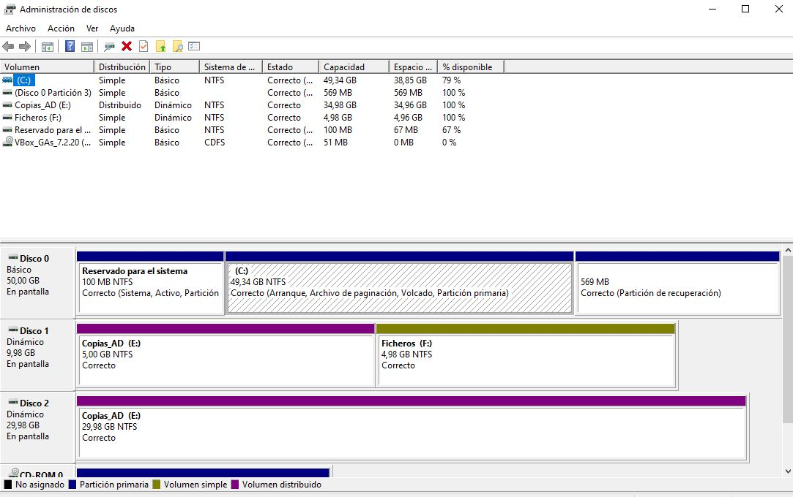
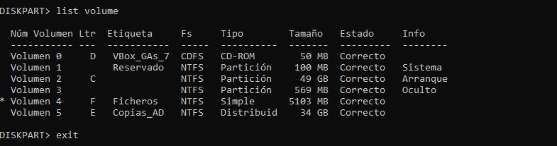
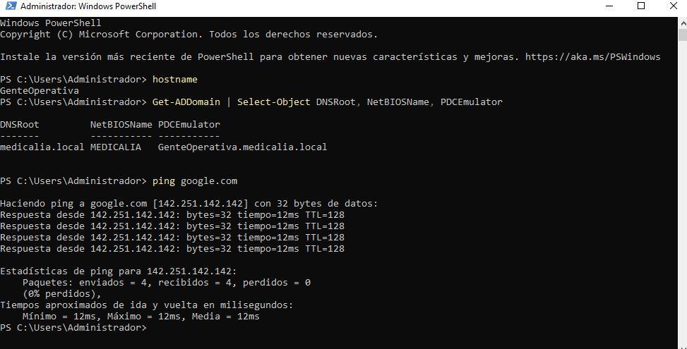

Bloques 1 y 2Responsables: Nacho y UnaiRevisores: Unai y Nadia
Partiendo de las máquinas preparadas en la Miniguía 1, dejamos el servidor con IP fija, los tres discos particionados por línea de comandos, el dominio medicalia.local creado y toda la estructura del Directorio Activo: unidades organizativas, grupos, los 20 empleados y la cuenta de administración del grupo.
GenteOperativa (nombre del grupo, como pide el enunciado)
Dominiomedicalia.local · NetBIOS MEDICALIA
IP del servidor10.0.2.10/24 · puerta de enlace 10.0.2.1
DiscosDisco 0: 50 GB (sistema) · Disco 1: 10 GB · Disco 2: 30 GB
Plantillas y scriptsC:\Plantillas
El controlador de dominio será el DNS de los clientes, así que su dirección no puede cambiar. En PowerShell como administrador, dentro del servidor:
New-NetIPAddress -InterfaceAlias "Ethernet" -IPAddress 10.0.2.10 -PrefixLength 24 -DefaultGateway 10.0.2.1
Set-DnsClientServerAddress -InterfaceAlias "Ethernet" -ServerAddresses 8.8.8.8
ping google.comEl DNS 8.8.8.8 es provisional: en el paso 4 el servidor pasa a usarse a sí mismo.
El cliente pide el primer disco para el sistema, parte del segundo para los ficheros de la empresa y el segundo y el tercero para las copias de seguridad del Directorio Activo. Lo hacemos con un script de diskpart, que se repite igual en cualquier servidor:
New-Item -Path C:\Plantillas -ItemType Directory -Force
@'
select disk 1
online disk noerr
attributes disk clear readonly noerr
convert gpt noerr
convert dynamic
select disk 2
online disk noerr
attributes disk clear readonly noerr
convert gpt noerr
convert dynamic
create volume simple size=5120 disk=1
format fs=ntfs label="Copias_AD" quick
assign letter=E
extend disk=2
create volume simple disk=1
format fs=ntfs label="Ficheros" quick
assign letter=F
list volume
exit
'@ | Set-Content -Path C:\Plantillas\particionado.txt -Encoding ASCII
diskpart /s C:\Plantillas\particionado.txt

list volume.Rename-Computer -NewName "GenteOperativa" -RestartInstall-WindowsFeature AD-Domain-Services -IncludeManagementTools
Install-ADDSForest -DomainName "medicalia.local" -DomainNetbiosName "MEDICALIA" -InstallDnsEl asistente pide la contraseña del DSRM (modo de restauración de servicios de directorio). La guardamos: la necesitaremos en el Producto 2. Tras el reinicio entramos como MEDICALIA\Administrador y el servidor pasa a ser su propio DNS, con salida a Internet a través de un reenviador:
Set-DnsClientServerAddress -InterfaceAlias "Ethernet" -ServerAddresses 10.0.2.10
Add-DnsServerForwarder -IPAddress 8.8.8.8
Resolve-DnsName medicalia.local
Resolve-DnsName google.com
hostname y Get-ADDomain devuelven GenteOperativa y medicalia.local.Estructura que creamos:
medicalia.local
├── Medicalia (empleados: aquí se vinculan las GPO comunes)
│ ├── Presidencia → G_Presidencia
│ ├── Almacen → G_Almacen
│ ├── RRHH → G_RRHH
│ ├── Nutricion → G_Nutricion
│ ├── Financiero → G_Financiero
│ └── Operaciones → G_Operaciones
├── Administradores (fuera de Medicalia: no les afectan las GPO de empleados)
│ └── G_Administradores · Admin_GenteOperativa
└── Equipos (los 20 PC; aquí se vinculan las GPO de equipo)Import-Module ActiveDirectory
$dominio = (Get-ADDomain).DistinguishedName
New-ADOrganizationalUnit -Name "Medicalia" -Path $dominio
New-ADOrganizationalUnit -Name "Administradores" -Path $dominio
New-ADOrganizationalUnit -Name "Equipos" -Path $dominio
foreach ($d in 'Presidencia','Almacen','RRHH','Nutricion','Financiero','Operaciones') {
New-ADOrganizationalUnit -Name $d -Path "OU=Medicalia,$dominio"
}
# Los equipos que se unan al dominio caerán en la UO Equipos
redircmp "OU=Equipos,$dominio"Un grupo global de seguridad por departamento. Sirven para dar permisos en las carpetas (Miniguía 3) y para la política de contraseñas (Miniguía 5).
$unidades = Get-ADOrganizationalUnit -SearchBase "OU=Medicalia,$dominio" -SearchScope OneLevel -Filter *
foreach ($u in $unidades) {
New-ADGroup -Name "G_$($u.Name)" -GroupScope Global -GroupCategory Security `
-Path $u.DistinguishedName -Description "Usuarios de $($u.Name)"
}
New-ADGroup -Name "G_Administradores" -GroupScope Global -GroupCategory Security `
-Path "OU=Administradores,$dominio"Los 20 empleados del organigrama están en C:\Plantillas\usuarios.csv (UTF-8). Cada fila incluye el único equipo desde el que puede iniciar sesión.
Nombre,Apellido,Usuario,Puesto,UnidadOrganizativa,Grupo,Equipo
Maria,Ballester,mballester,Presidenta,Presidencia,G_Presidencia,PC-MBALLESTER
Jorge,Perez,jperez,Jefe de Almacen,Almacen,G_Almacen,PC-JPEREZ
Silvia,Sanchez,ssanchez,Jefa de Operaciones,Operaciones,G_Operaciones,PC-SSANCHEZ
... (20 filas en total)Por cada fila, el script crea el usuario en su UO, lo añade a su grupo, lo limita a su equipo y crea la cuenta de ese equipo en la UO Equipos. La contraseña inicial es común y se obliga a cambiarla en el primer inicio de sesión.
$dns = (Get-ADDomain).DNSRoot
$pass = Read-Host "Contraseña inicial" -AsSecureString
foreach ($u in Import-Csv -Path C:\Plantillas\usuarios.csv -Encoding UTF8) {
$datos = @{
Name = "$($u.Nombre) $($u.Apellido)"; GivenName = $u.Nombre; Surname = $u.Apellido
DisplayName = "$($u.Nombre) $($u.Apellido)"; SamAccountName = $u.Usuario
UserPrincipalName = "$($u.Usuario)@$dns"; Title = $u.Puesto; Department = $u.UnidadOrganizativa
Path = "OU=$($u.UnidadOrganizativa),OU=Medicalia,$dominio"
AccountPassword = $pass; Enabled = $true; ChangePasswordAtLogon = $true
}
New-ADUser @datos
Add-ADGroupMember -Identity $u.Grupo -Members $u.Usuario
Set-ADUser -Identity $u.Usuario -LogonWorkstations $u.Equipo
New-ADComputer -Name $u.Equipo -Path "OU=Equipos,$dominio"
}El enunciado pide una cuenta con el nombre del grupo y control total sobre el dominio, capaz de administrarlo desde cualquier equipo. La creamos en la UO Administradores y la añadimos a Admins. del dominio por su SID (termina en 512), que funciona igual en un servidor en español o en inglés.
New-ADUser -Name "Admin_GenteOperativa" -SamAccountName "Admin_GenteOperativa" `
-UserPrincipalName "Admin_GenteOperativa@$dns" -Path "OU=Administradores,$dominio" `
-AccountPassword (Read-Host "Contraseña" -AsSecureString) -Enabled $true
$admins = Get-ADGroup -Identity "$((Get-ADDomain).DomainSID.Value)-512"
Add-ADGroupMember -Identity $admins -Members "Admin_GenteOperativa"
Add-ADGroupMember -Identity "G_Administradores" -Members "Admin_GenteOperativa"| Comando | Resultado esperado |
|---|---|
Get-ADDomain | Select DNSRoot, NetBIOSName | medicalia.local · MEDICALIA |
Get-Volume | E: Copias_AD de unos 35 GB y F: Ficheros de unos 5 GB |
Get-ADGroup -Filter 'Name -like "G_*"' | 7 grupos |
(Get-ADUser -Filter * -SearchBase "OU=Medicalia,$dominio").Count | 20 |
(Get-ADComputer -Filter * -SearchBase "OU=Equipos,$dominio").Count | 20 |
Get-ADPrincipalGroupMembership Admin_GenteOperativa | Admins. del dominio y G_Administradores |
Une el espacio de dos discos en una sola unidad para las copias de seguridad. Por eso los discos se convierten a dinámicos.
Crear 20 usuarios y 20 equipos a mano es lento y propenso a errores. Con el CSV el proceso es repetible.
Cumple el requisito de que cada empleado solo se autentique desde su ordenador.
Las directivas de ciberseguridad se vinculan a Medicalia y no afectan a los administradores.
| Problema | Causa | Solución |
|---|---|---|
select disk 1 da error de Select-Object | Se escribió en PowerShell sin entrar en diskpart | Usar diskpart /s con el script |
convert gpt falla | Disco sin conectar o de solo lectura | Las líneas online disk y attributes disk clear readonly |
| El usuario ya existe | El script se ejecutó dos veces | Volver a la instantánea anterior y repetirlo una sola vez |
| Caracteres raros en los nombres | El CSV no está en UTF-8 | Guardarlo en UTF-8 e importarlo con -Encoding UTF8 |
| Falla el nombre del equipo | Más de 15 caracteres | Acortar la columna Equipo |